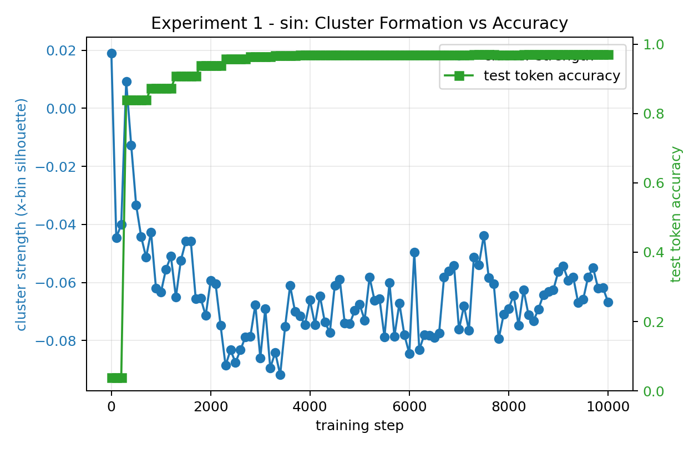
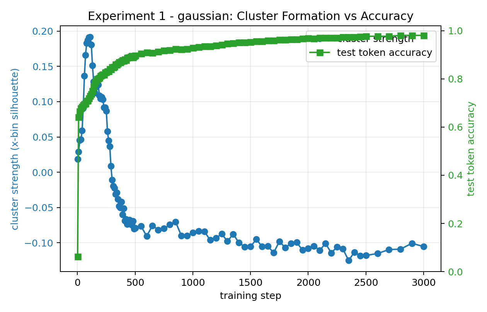

Experiment 1 / Mechanistic Interpretability
Continuous Feature Manifolds in Tiny Transformers
These notes are about a small question with a surprisingly geometric flavor: when a transformer learns a continuous function from decimal strings, does its residual stream become a smooth internal manifold of the input variable?
The model here is intentionally small. It receives prompts such as
x=1.234;y= and is trained to emit the decimal expansion of a target
function. The four functions are identity, square,
sin, and gaussian. At different training checkpoints, I
collect the residual stream vector at the position just before the model begins
writing y. That vector is the object of study.
The core picture is simple: if the model has learned a continuous function, then nearby input values should have nearby internal states. The residual stream should not just memorize strings. It should trace something like a curve or folded sheet.
Experimental Setup
For each task, the model is trained on decimal-string regression. During analysis,
I sample a grid of input values, run the prompts through the model, and collect
h(x), the residual stream activation before the target is generated.
I then visualize these activations with PCA, measure geometry statistics, and
compare a coarse cluster-formation score against token accuracy.
Representation
Residual stream activations at the final prompt position before generating y.
Geometry
PCA projections, participation ratio, local smoothness, and distance correlations.
Dynamics
Checkpoints were analyzed across training, with finer sampling early in training.
Accuracy
Cluster formation was compared against test token accuracy for the same checkpoints.
Headline Findings
The strongest result is temporal: accuracy rises very quickly. For several tasks, most of the learning visible in token accuracy happens in the first 500 steps. This motivated the denser checkpoint schedule now used by the experiment code.
| Task | Accuracy at step 1 | Accuracy near step 500 | Final accuracy | Final cluster score |
|---|---|---|---|---|
| identity | 2.8% | 100.0% | 100.0% | 0.193 |
| square | 5.3% | 74.6% | 89.2% | -0.073 |
| sin | 3.9% | 84.0% | 97.1% | -0.067 |
| gaussian | 6.2% | 90.0% | 98.4% | -0.093 |
The cluster score here is an x-bin silhouette score in the projected
representation space. It is a deliberately crude measurement. It asks whether
coarse intervals of x separate into clusters. The answer is not
uniformly yes, and that is interesting.
Accuracy Is Fast, Geometry Is Slower
The identity task reaches perfect token accuracy by step 500, and its final cluster score is positive. The gaussian task has a visible early cluster peak around step 100, but by the final checkpoint its coarse silhouette score is negative. The square and sine tasks also end with negative coarse cluster scores, even though accuracy becomes high.


Manifold, Not Just Clusters
My current interpretation is that "cluster formation" is too blunt a picture.
For a continuous variable, a successful representation may be better described as
an ordered manifold than as a set of separated islands. A negative silhouette
score does not mean the representation is meaningless. It can mean that adjacent
x-bins overlap smoothly, which is exactly what a continuous curve
should do.
| Task | Initial Spearman distance correlation with x | Final Spearman distance correlation with x | Final PCA participation ratio |
|---|---|---|---|
| identity | 0.636 | 0.430 | 2.89 |
| square | 0.638 | 0.228 | 7.42 |
| sin | 0.640 | 0.626 | 1.87 |
| gaussian | 0.641 | 0.319 | 5.50 |
The sine task is the cleanest manifold story in these metrics: the final
representation preserves a strong distance relationship with x and
remains low dimensional by PCA participation ratio. The square and gaussian tasks
seem to use higher-dimensional or more folded representations. That makes sense:
both are symmetric around zero, so the model may have less reason to preserve
signed distance in a simple one-dimensional order.
Interactive Visualizations
The most useful artifacts are the interactive PCA plots. They let you scrub
through checkpoint time, hover over individual points, and inspect which
x value each point corresponds to.
The code now also supports interactive UMAP with nearest-neighbor hover summaries
and per-step accuracy display. Those UMAP files will appear after rerunning the
updated analysis with umap-learn installed.
What Changed After Looking At The Results
The early accuracy jump changed the experiment design. The new checkpoint schedule samples more densely where the transition is sharp: every 10 steps through step 500, every 50 steps through step 2500, and every 100 steps afterward. This is a small practical point, but it matters: if the representational phase transition happens early, coarse checkpointing can miss the actual event.
I also added a mixed-task model. Instead of training four separate transformers,
the new mode trains one model on all four tasks at once, using a task label in the
prompt. The question is whether the model builds one shared continuous coordinate
system for x, four separate task-conditioned manifolds, or something
in between.
Current Picture
My working picture is this: small transformers can learn continuous structure from string supervision, but the resulting geometry is not merely a cartoon of clusters forming. Accuracy can become high before the geometry settles. Some functions preserve a clean low-dimensional order; others bend, fold, or spread into higher-dimensional regions.
That feels like the beginning of a better question. Not "does the model have a
feature for x?" but rather: what kind of coordinate system does the
model invent, and how does that coordinate system depend on the function it is
trying to compute?